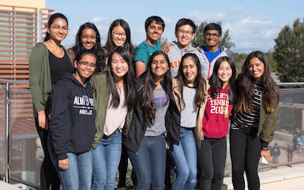

Educational Enhancement
Some of the educational opportunities that enhance my overall portfolio.
Career Opportunities
- Information Technology Audits Manager
Career Development Planning
Intra-District Council President
As President of the Fremont Union High School District, I am in charge of multiple aspects of the district. IDC focuses primarily on rallies, dances, events. In addition, as president I am in charge of scheduling meetings, getting charities approved, and organizing IDC Exchanges among the five high schools. I work with 18 other people including: the Inter-District Council Advisor, the five Associated Student Body Presidents, the Student Board Representative, and the nine other IDC student representatives. Together, we collaborate and brainstorm ideas to continue improving the FUHSD.
FBLA Competition Committee Leader
As the leader of the competitions committee I was able to learn how to distribute assignments and assign tasks to different committee members. In this position, I led a team of 11 committee members who each had their own expertise in a specific competition cluster. My job was to ask each competition committee member to finish a certain amount of work in a certain amount of time whether it be creating practice tests for competitors, gathering study resources, or simply sending out emails with relevant information. Through this position, I was able to learn how to supervise a group of people and split up the work in different sublevels to help our overall chapter succeed, which is a similar responsibility in the occupation of a program manager.
Planning
Internships & Community Service
Think Tank Internship
This internship was a fantastic and informative experience as I was given exposure to working with actual professionals at an educational prep center called Think Tank. My job was to make phone calls to individuals in our community and promote Think Tank’s valuable opportunities and demonstrate the positive effects of the company’s features on students’ educations. Additionally, through this internship I was able to gain organizational skills as I worked to organize papers and specific information using online tools. Overall, this experience will be helpful in my job as a program manager as I will already have real work experience in organization and being time-efficient and detail-oriented.
Cupertino Hoops Head Coach
As the Head Coach of Cupertino Hoops, I gained many skills, but most specifically leadership and organization skills. After playing in the organization for 3 years: 6th to 8th grade, I decided to give back to the community and contribute my part. Therefore, I started volunteering as a coach in basketball in 9th grade and continue coaching to this day. I coach teams of about 10 - 12 girls and teach them various techniques and tricks that I have learned as a basketball athlete. In addition, I coach practices twice a week and a game once a week as well as communicate to parents about time, location, and other details via email. Both coaching and communicating with parents have made me a better leader and more organized, which contribute to my capabilities as a program manager. These little experiences allow for me to have exposure to the many similar responsibilities of a program manager.
CSF/NHS Volunteer
As a member of both the California Scholarship Federation and National Honor Society clubs on campus, I volunteer consistently at least 20 hours a semester. My volunteering events range from: races to fundraise for different type of diseases, old age centers, local holiday events, elementary school fairs, community cleanups and more. Through these volunteering opportunities, I learned to collaborate with others and work toward one goal, which will come as a useful skill in my career as a program manager.
Visit the rest of my Portfolio!
Next: Learn about some of my special skills. Next: Learn the sources of my research.